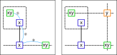
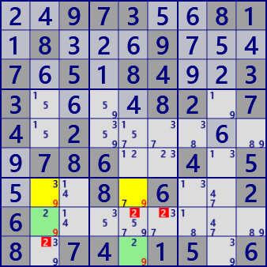
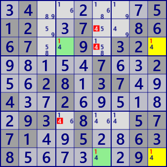

W-Wing
候補数字が2個のセルをbivalue cellといいます。
W-Wingは、同じ候補数字のbivalue cell1組とリンクで構成するパターン系Lockedの解析アルゴリズムです。
次の図で説明します。同じ候補数字(x、y)をもつ1組のbivalueセル(緑枠)が、
数字ｘの ①弱いリンク-②強いリンク-③弱いリンク と結びついているとします（左図）。
このとき、2つのbivalueセル(緑枠)と同時に関係をもつセル(オレンジ枠)が候補数字ｙをもつことはできません(右図)。

解析アルゴリズムは、次のとおりです。
- bivalueセルのリストを作成する。
- bivalueセルのリストから組合せにより2セル（P,Q)を選ぶ。
- P,Qは同じ候補数字をもち、異なるHouseに属することをチェックする
- 強いリンクLを1つ選ぶ。Lの両端セルは、P,Qと弱いリンクを形成することを確認する。
- Pの影響圏とQの影響圏の共通部分に除外候補があるかをチェックする。あればW-Wing
XY-Wingの例を示します。右の図場面には、この解を含め全部で9つのW-Wingがあります。


..973..81.8...9...7.5.84..33....82.74.2.......786..4.5...8.6..26........8.74.15.6
.4......512..7..8667..9.32......7..2..28.37..4..2......93.8..5771..5..638......9.